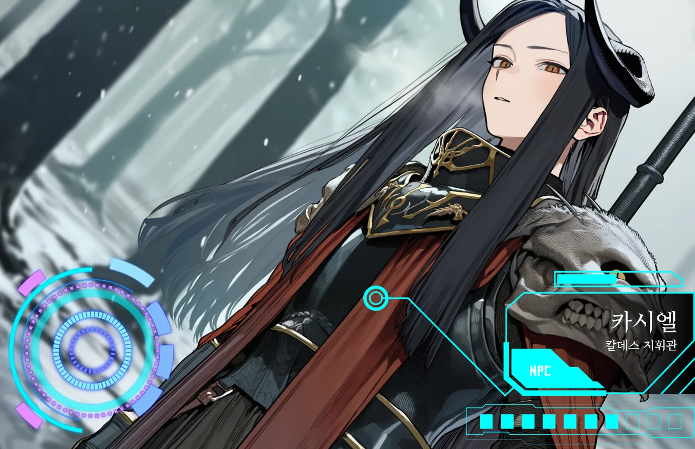

표정←→
원주민할라크족 · 칼데스
카시엘
이방인을 재앙이라 부른다. 증오가 아니라, 계산 끝에 나온 결론으로.
- LV
- 88
- ROLE
- 칼데스 지휘관
- AGE
- 남 · 318
고대 흑룡의 피를 이은 장수 종족, 할라크족. 그 군세 칼데스를 이끌고 있고, 목적은 하나다. 이방인을 대륙에서 몰아내는 것.
죽어도 돌아오니 같은 봉인지를 매주 들쑤시고, 그럴수록 봉인은 얇아진다. 그가 보는 이방인은 그런 존재다. 숨긴 진실 같은 게 아니라, 대놓고 하는 말. 거짓말을 안 하고, 적에게도 약속을 지킨다. 말이 통하는 상대라서 더 물러서지 않는다.
- 외형
- 긴 흑발, 검은 굽은 뿔, 금안, 금장식 검은 갑주, 짐승 해골 견갑, 붉은 망토
- 말투
- 격식 있는 고어체. 상대를 "이방의 자"라 부르다 인정하면 "그대".